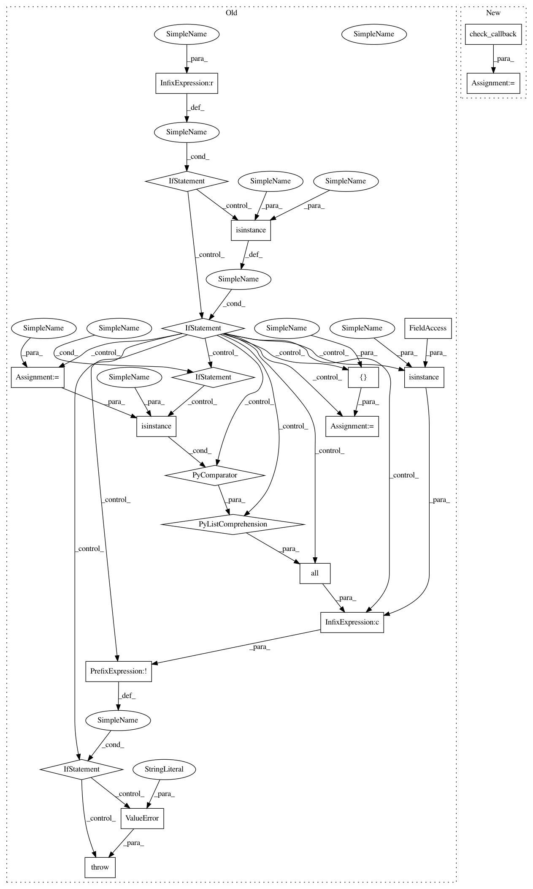

5e2da9838a4dd392ec11432253eda9f823846daa,skopt/gp_opt.py,,gp_minimize,#Any#Any#Any#Any#Any#Any#Any#Any#Any#Any#Any#Any#Any#Any#Any#Any#Any#,36
Before Change
specs = {"args": copy.copy(inspect.currentframe().f_locals),
"function": inspect.currentframe().f_code.co_name}
if callback is not None:
if isinstance(callback, Callable):
callback = [callback]
elif not (isinstance(callback, list) and
all([isinstance(c, Callable) for c in callback])):
raise ValueError("callback should be either a callable or "
"a list of callables.")
// Check params
rng = check_random_state(random_state)
space = Space(dimensions)
// Default GP
After Change
// Save call args
specs = {"args": copy.copy(inspect.currentframe().f_locals),
"function": inspect.currentframe().f_code.co_name}
callbacks = check_callback(callback)
// Check params
rng = check_random_state(random_state)
space = Space(dimensions)
In pattern: SUPERPATTERN
Frequency: 3
Non-data size: 21
Instances
Project Name: scikit-optimize/scikit-optimize
Commit Name: 5e2da9838a4dd392ec11432253eda9f823846daa
Time: 2016-08-08
Author: mks542@nyu.edu
File Name: skopt/gp_opt.py
Class Name:
Method Name: gp_minimize
Project Name: scikit-optimize/scikit-optimize
Commit Name: 5e2da9838a4dd392ec11432253eda9f823846daa
Time: 2016-08-08
Author: mks542@nyu.edu
File Name: skopt/gp_opt.py
Class Name:
Method Name: gp_minimize
Project Name: scikit-optimize/scikit-optimize
Commit Name: 5e2da9838a4dd392ec11432253eda9f823846daa
Time: 2016-08-08
Author: mks542@nyu.edu
File Name: skopt/tree_opt.py
Class Name:
Method Name: _tree_minimize
Project Name: scikit-optimize/scikit-optimize
Commit Name: 5e2da9838a4dd392ec11432253eda9f823846daa
Time: 2016-08-08
Author: mks542@nyu.edu
File Name: skopt/dummy_opt.py
Class Name:
Method Name: dummy_minimize